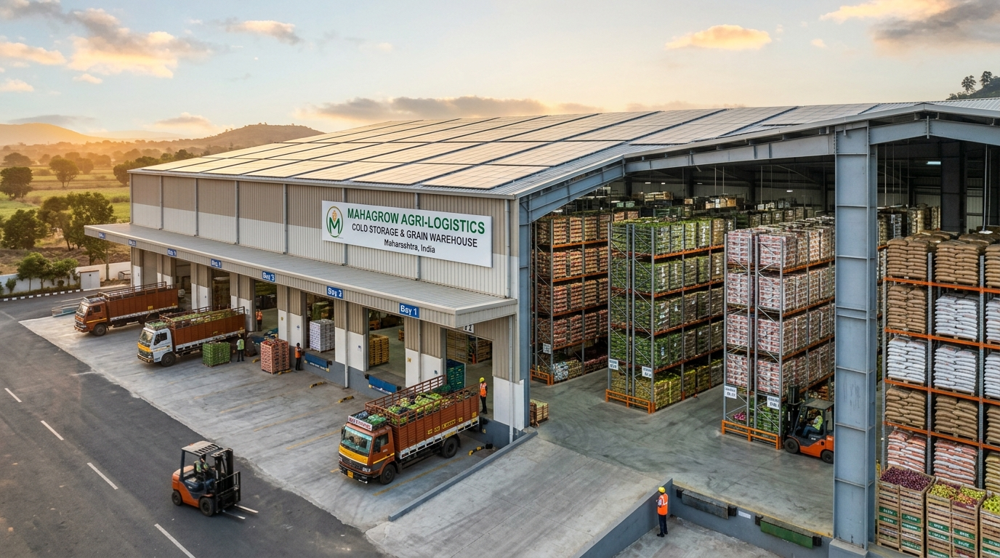

GODOWN STORAGE UTILIZATION
70.4% Full
Capacity & Stock Balance
0 MT (Empty)
845.0 MT Stored
1,200 MT (Max)
📦 Total Usable Stock
845.0 MT
8,450 Quintals
🟢 Free Space Available
355.0 MT
Ready for intake
⚡ Today's Inward (Farmer)
+42.5 MT
14 Consignments
🚚 Today's Outward
-18.2 MT
Vashi & Pune APMC
STOCK MOVEMENT RECORDING DESK
Record Stock Movement / माल नोंदणी केंद्र
Standardized inventory tracking under Maharashtra Agricultural Inventory guidelines. Quantities are automatically converted to uniform kilograms.
VAULT SUMMARY
Stored Commodities & Usable Inventory
| Movement ID | Timestamp | Commodity | Movement Type | Reported Quantity | Standard (KG) | Farmer / Destination Ref | Slip / Gate Pass | Status |
|---|